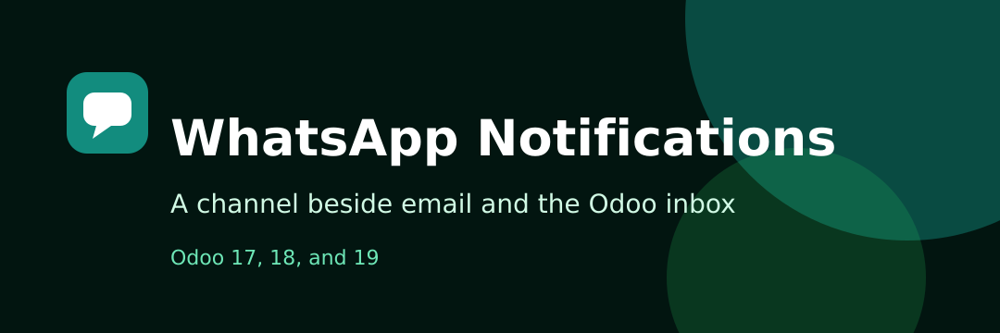

This module sends the Odoo events you choose through the external WaNoti service, on the company's own WhatsApp number. It is published for Odoo 17, Odoo 18, and Odoo 19. Install the download that matches the database. One module per database. The technical name is wanoti.
Use it on Odoo.sh or on an on-premise server. Odoo Online cannot install this module.
The module installs and opens without an activation key. Nothing is sent until an administrator turns on data sharing and then turns on an event or a WhatsApp code.
When data sharing is on, the phone number and the notification or code that was enabled are sent to WaNoti so they can be delivered on WhatsApp. Sale quotation and order messages can also include the customer name, the order number, amounts, and the document link. Odoo keeps the records.
Support: support@wanoti.com
Notifications
WhatsApp codes
Opening Notifications again after another app is installed adds that app's events, still turned off.